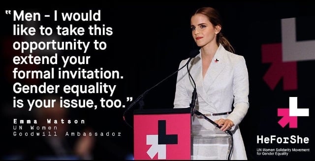
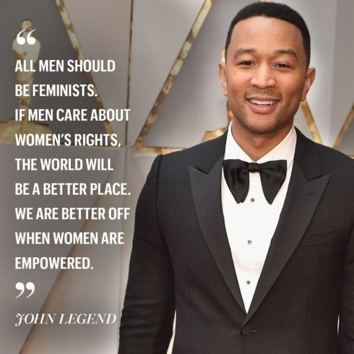
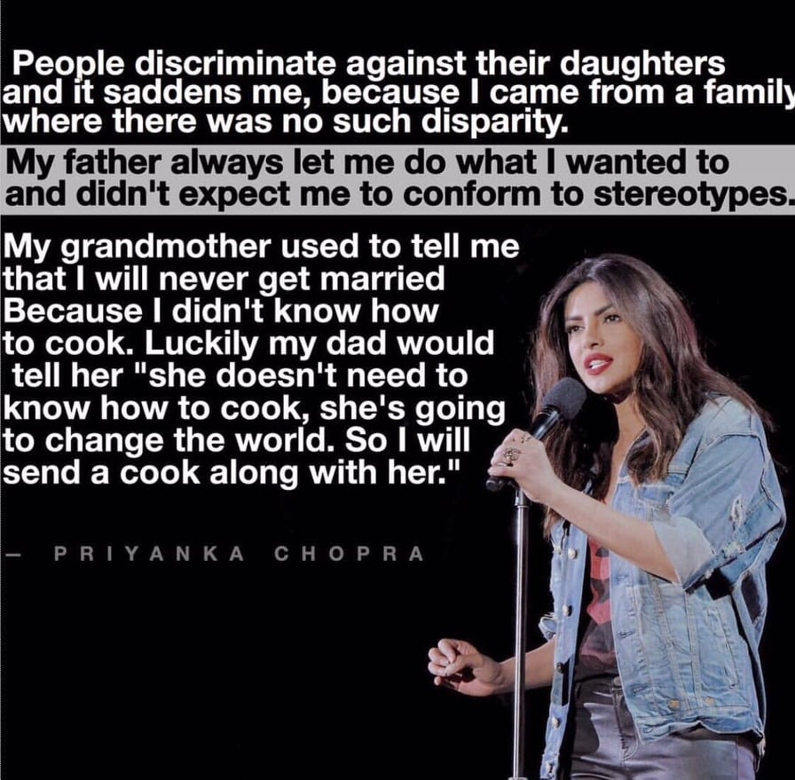
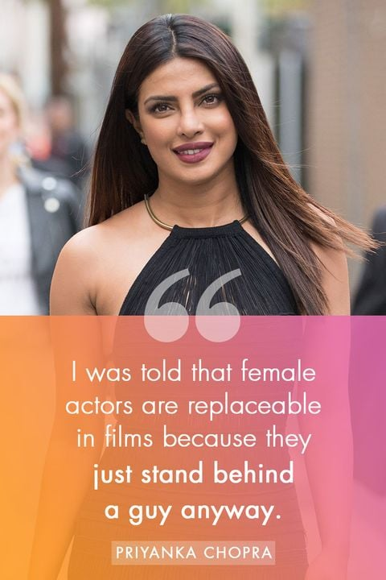

Emma Watson is the UN Goodwill Ambassdor of England. During the HeForShe campaign, she revealed the gender bias experiences she had seen and experienced while growing up. She also pointed out that gender equality is not only women's issue but it is also men's issue to participate in.She supported gender equality for the men who are unable to express their feelings and suffering from mental illness as a result of the gender stereotype that men have to be"macho".The British actor at the HeForShe Campaign launch in September 2014 said," Both men and women should feel free to be strong ...It is time that we all perceive gender on a spectrum ,not as two opposing sets of ideals". She also revealed in an interview that she had been directed by male directers 17 times and only twice by female directors, showing that gender inequality is prevalent behind the camera as well.

The American singer and song writer in an interview for the documentary series Makers, said that men shouldn't wait until they have daughters to start caring about women's rights.
He further added " It doesn't cost us anything as men ,for women to do well.We don't lose out because women are empowered...more women are leaders.It just makes the world better."

The famous hollywood star at the 2015 African Union Summit gave a speech on the importance of women's rights.She said ," There is a global epidemic of violence against women- both within conflict zones and within societies at peace - and it is still treated as a lesser crime and lower priority .We need policies for long-term security that are designed by women, focused on women,executed by women -not at the expense of men ,or instead of men ,but alongside and with men."
She further said," There is no greater pillar of stability than a strong,free and educated woman .And there is no more inspiring role model than a man who repects and cherishes women and champions their leadership."
The sharp-shooting basketball player of the team Golden State Warriors penned a moving letter in support of gender equality.He wrote ,"I am feeling more driven than ever- to help out women who are moving towards progess,in any way that i can.Let's work to close the pay gap.And let's work together on this .I mean 'women deserve equality'- and that's not politics ,right? that's not politics right? That's not something that people are actually disagreeing on,is it? It can't be."
The all time successful bollywood and hollywood actor Priyanka Chopra is a 100% feminist .The actress supports women's education,women's rights, and supports women entrepreneurs and
promotes their businesses.The global icon says that she defines feminism simply as equal opportunity for women. She further added,"Feminism needs men.It needs men in their
lives to stand up for their mothers, sisters, their girlfriends, their wives, their daughters and say that i am going to change the game for my future generation." She talks about how
she sees so many of her girlfriends who claim not to be much of a feminist and how she doesn't understand it.She says ," the need for feminism was created because there were no rights
for women .That's why there is no man-ism ,because they always had it." Priyanka is a massive inspiration to all the women around the world.She is a self-created star .


* Many influential people have fought against gender inequality but the reason i chose these above stars as an inspiration is because what they have said about women's rights and equity made me feel supported and gave me the courage to stand up with them against this anti-discriminatory movement .Their statement about women deserving the same treatment as men and men, and women being of the same value gives me hope that one day gender inequality and gender stereotypes will become extinct from people's mind. *
{kind=link}